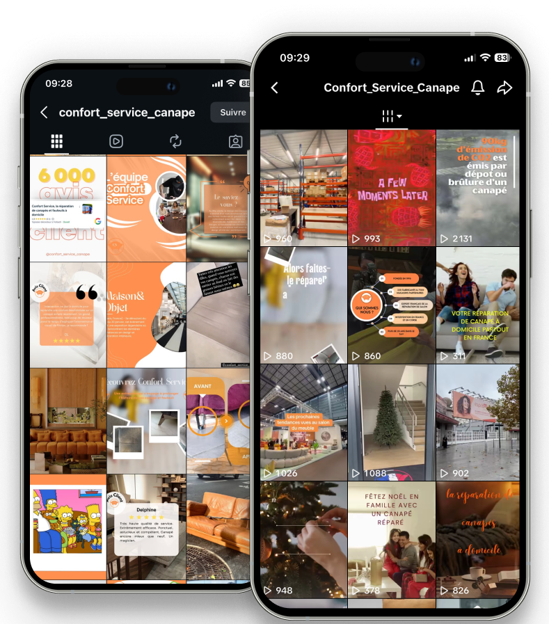

L'entreprise
Confort Service est une société française de services spécialisés dans la remise en état de meubles de salon, notamment les canapés et fauteuils en cuir, tissu ou microfibre. L’entreprise intervient directement au domicile des clients partout en France, proposant des prestations de réparation, rénovation et couture pour prolonger la durée de vie des meubles plutôt que de les remplacer. Elle collabore également avec des magasins et fabricants comme prestataire de service après-vente.

Mes missions
- Développement de publications engageantes, tendances et attractive pour Instagram et TikTok, atteignant 400 abonnés sur chaque plateforme.
- Planification et publication de contenus pour maintenir une présence cohérente et attractive.
- Interaction avec les abonnés pour renforcer et développer davantage d'engagement.
- Collaboration avec des créateurs du domaine de la décoration, de la rénovation et du mobilier pour accroître la visibilité de la marque et toucher de nouveaux publics.
- Production de contenus optimisés pour attirer plus de trafic.
Réalisations clés
Création de contenus pour les réseaux sociaux
Conception de publications et de visuels pour les réseaux sociaux de Confort Service, mettant en avant les interventions avant après, le savoir faire des techniciens et les prestations de réparation à domicile.
Rédaction de contenus web et valorisation des services
Rédaction de textes pour présenter les services de l’entreprise, expliquer les interventions et rassurer les clients sur le processus de réparation, avec une attention portée à la clarté et à la pédagogie.
Mise en place de partenariats avec des micro-influenceurs
Identification, prise de contact et collaboration avec trois micro-influenceurs afin de valoriser les services de Confort Service, notamment à travers des contenus.
Ce que j'ai appris
Cette expérience chez Confort Service m’a permis de développer mes compétences en communication digitale et en marketing opérationnel. J’ai appris à valoriser des services techniques, et à collaborer avec des micro-influenceurs.
J’ai également pris conscience de l’importance d’une communication claire et rassurante pour renforcer la confiance, soutenir l’image de marque et accompagner le développement d’une entreprise de services orientée proximité et qualité.